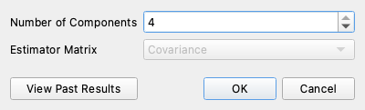
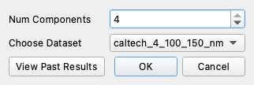

6. PCA and MNF#
Goal: compress a cube into a handful of bands, judge how many are worth keeping, and know when to reach for the Minimum Noise Fraction (MNF) instead of Principal Component Analysis (PCA).
Data: caltech_4_100_150_nm.hdr (from Tutorial 1).
With four bands, PCA and MNF return at most four components, which is enough to
see how each transform behaves. The scree-plot discussion in Step 3 describes
what you will see on a full-size cube with hundreds of bands.
Reference: Principal Component Analysis, Minimum Noise Fraction.
Why reduce dimensions#
A 425-band cube is mostly redundant: neighboring bands measure nearly the same thing, so the information lives in far fewer dimensions than the band count suggests. Reducing them first makes every later step cheaper and less noisy. Classifiers and unmixing models chase sensor noise when handed 400 correlated channels.
The two transforms order their components differently:
Orders components by |
Use it when |
|
|---|---|---|
PCA |
Variance |
A quick look, display, or feeding a classifier |
MNF |
Signal-to-noise ratio |
Noise varies between bands — which on a real spectrometer it always does |
PCA calls a component important if the data spreads out along it, and a noisy band spreads out too. MNF estimates the noise first, rescales so noise is equal in every direction, and then decomposes. Its leading components carry real signal, and its trailing components hold the noise.
Step 1 — Run PCA#
Open the campus scene as in Tutorial 1. PCA has no dataset chooser and runs on whatever the main window shows, so use Select dataset to view to make sure it shows
caltech_4_100_150_nm, not a result from an earlier tutorial.Right-click the image and choose Data Analysis ▸ Principal Component Analysis, or choose Tools ▸ Data Analysis ▸ Principal Component Analysis. A dialog titled PCA: caltech_4_100_150_nm opens.


Leave Number of Components at its default, the maximum. You decide how many to keep after seeing the scree plot.
Click OK.
WISER drops bad bands, eigendecomposes the covariance matrix of what remains,
and projects the cube onto the leading eigenvectors. The result is added as
PCA on <source>, ordered most to least variance.
Note
PCA is fast even on a full-size airborne scene of several hundred bands.
Step 2 — Look at the components#
Switch to the result with Select dataset to view on the Main Toolbar.
Click Band chooser, select Grayscale, set Grayscale Band to band 0, and click OK.
Step through bands 1, 2 and 3 the same way.
To build a false-color composite, select RGB in the Band Chooser and set Red Band, Green Band and Blue Band to bands 0, 1 and 2.
Interpretation
Band 0 is almost always overall brightness. Everything in a scene reflects more or less light in total, so the largest single direction of variance tends to be albedo.
Bands 1, 2 and 3 look different, because later components carry the differences between materials rather than their brightness. That is why a false-color composite of the first three components often separates surfaces that look alike in true color.
Note
Principal components have no physical units. A PCA band is a projection onto an eigenvector, so its values are not reflectance. Its sign is arbitrary too, and an inverted-looking component is not a bug. Interpret them by what they separate, and go back to the original cube whenever you need real spectra.
Step 3 — Read the scree plot#
When the run finishes, WISER opens a scree plot: eigenvalue against component index, on a log scale. It answers “how many components should I keep?”.
Look for the elbow, where the curve flattens. Components before it hold structure; after it, noise. On this four-band scene the plot has only four points. On a full-size airborne scene the eigenvalues can fall four orders of magnitude by component 50, with the elbow around component 10–15: roughly the first dozen carry the scene.
Click View Past Results in the PCA dialog to reopen the scree plot for any earlier run without recomputing. The dialog’s options are described in Principal Component Analysis.
Step 4 — MNF#
MNF is at Tools ▸ Data Analysis ▸ Minimum Noise Fraction.


Set Choose Dataset to
caltech_4_100_150_nm. The dropdown starts on (no data), so choose it explicitly.Leave Num Components at its default, the maximum for that dataset.
Click OK. The result is
MNF, Img: <source>.
How WISER estimates the noise decides whether the result is meaningful. It uses the shift difference: each pixel minus its neighbor one row below. Adjacent pixels should be nearly the same, so what remains is mostly sensor noise. The full sequence, from noise estimate through whitening to projection, is in Minimum Noise Fraction.
Note
The shift-difference estimate assumes neighboring pixels are similar. It works on a scene with smooth spatial structure and misleads on one that is busy at the pixel scale, such as a striped scene, a dense urban scene at meter resolution, or an image with strong along-track banding. If MNF results look wrong, check this assumption first.
On this campus scene the shift difference picks up real roof and street edges as well as noise, so treat its MNF result as practice on the mechanics.
Use MNF’s leading components as the input to K-means, unmixing, or matched filtering. That is exactly what MTMF does internally.
Which one, and how many#
Situation |
Reach for |
|---|---|
Quick visual survey of a big cube |
PCA, 3–5 components as false color |
Input to a classifier or unmixing |
MNF, components up to the elbow |
Reducing noise before a detection run |
MNF — that is what it is for |
You need real reflectance values back |
Neither — go to the original cube |
Both tools drop bands flagged bad in the header before fitting, so a cube with a proper bad-band list gives better results than one without.
What you can now do#
Run PCA and MNF and say which one a task calls for
Use a scree plot to choose a component count
Recognize a brightness component and interpret later ones
Say when the shift-difference noise estimate is not trustworthy